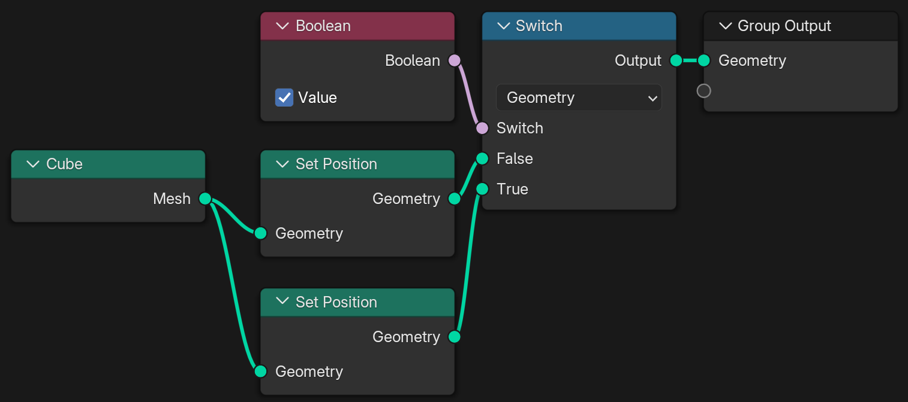
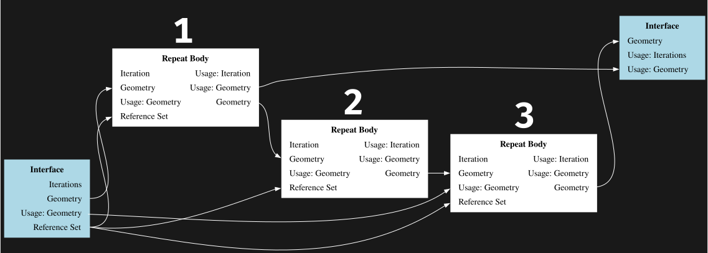

Evaluating Geometry Nodes
Join the interactive part!
Topics
Get Started
Lazy Evaluation
Array Processing
About Me
What's your background?
Get Started
Toposort

Two-Pass Evaluation

Push vs. Pull
Lazy Functions
get_or_request_inputset_output-
get_output_usage
-
set_input_unused
Lazy Function Graph

Message Passing

Scheduling - Message Priority

Scheduling - Breadth vs. Depth First

Breadth or Depth First?
Lazy Function Composition
LazyFunction ⟶
Graph ⟶
LazyFunction
Node Groups

Zones

Scheduling - Multi Threading

Task Stealing
Multi Threading Overhead
parallel_for(10'000, 512, [&](const IndexRange range) {
...
});
Lazy Threading
Non-Uniform and
Unknown Task Sizes